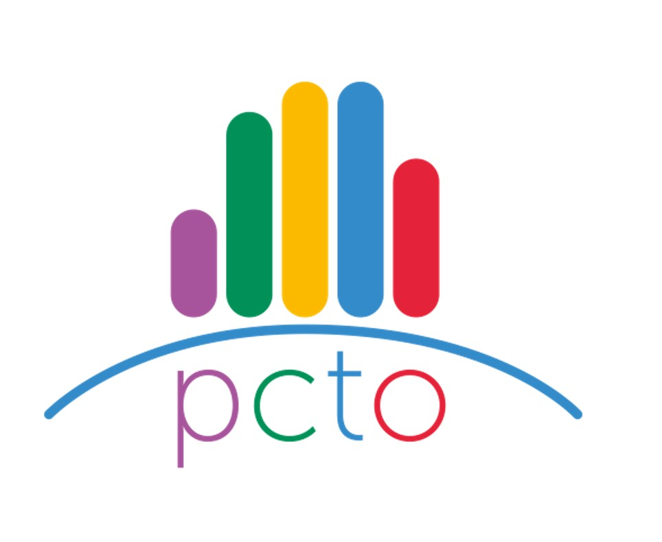
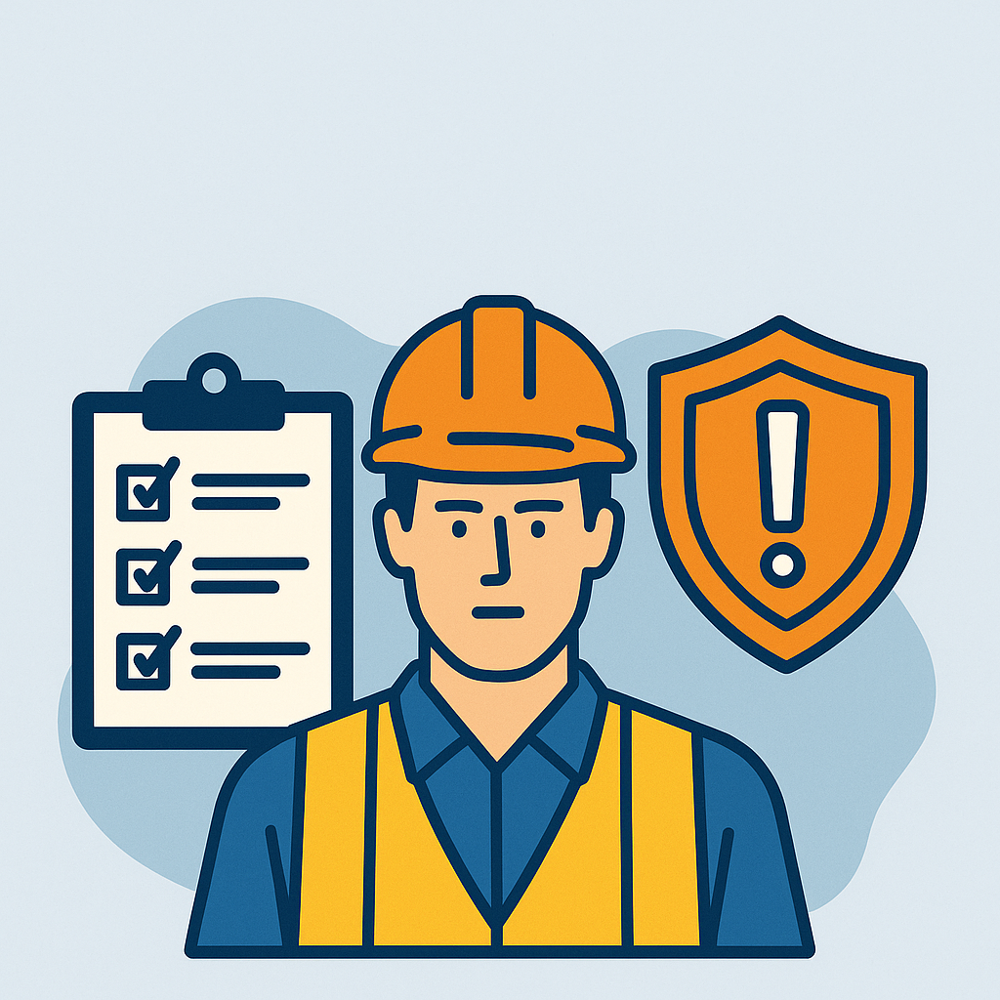

UST: introduzione al PCTO
Ore svolte in totale: 2
Il progetto "UST: introduzione al PCTO" è stato un incontro avvenuto su meet il giorno 30/10/2024 in cui ci è stato spiegato che cos'é il PCTO e a che cosa serve. Con questa attività ho imparato molto anche sul mondo del lavoro e mi sono posto delle domande su che cosa fare finite le superiori. Inoltre con questo incontro ho imparato e appreso molto sui diritti e gli obblighi degli studenti e sulle competenze trasversali richieste nel mondo del lavoro.
Sicurezza
Ore svolte in totale: 2
Il corso di sicurezza serve a insegnarci come rendere l'ambiente di lavoro sicuro ed evitare infortuni sul lavoro e anche come comportarsi e quali misure adottare per evitare problemi sul mondo del lavoro. Il corso di sicurezza mi ha insegnato i comportamenti da tenere nell'ambiente di lavoro.


Monta-Smonta
Ore svolte in totale: 4
Il progetto "Monta-Smonta" è un progetto in cui abbiamo studiato le parti che compongono un PC. Nelle prime due ore ci sono state spiegate le varie componenti che si possono trovare, invece nelle altre due ore siamo stati noi a smontare un computer e a individuare le varie parti. Con questa attività ho imparato dal punto di vista fisico come è composto un computer, ma soprattutto, ho imparato ad affrontare un problema molto complicato e difficile cercando soluzioni efficaci.
Busconnect, un ponte tra generazioni
Ore svolte in totale: 10.
Busconnect è stato un progetto in cui noi studenti ci siamo messi a disposizione per aiutare delle persone anziane ad avvicinarsi al mondo della tecnologia ed eventualmente rispondere a qualsiasi domanda venisse loro in mente. Con questa attività ho imparato a mettermi a disposizione delle persone per aiutarle e fornire informazioni per dissolvere ogni tipo dubbio.